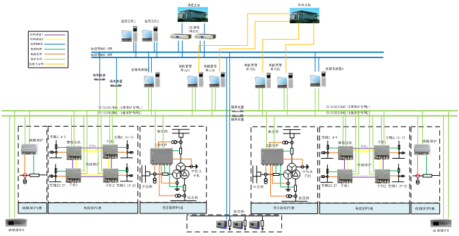
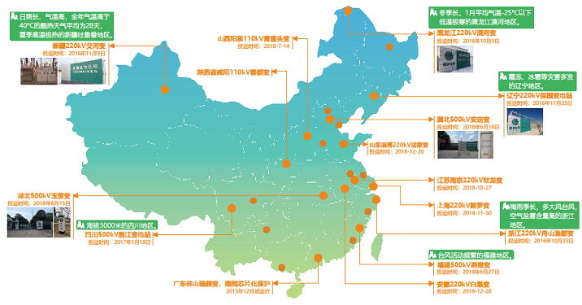

随着智能电网的发展，变电站的屏柜数量及能耗、保护设备的可靠性和速动性、运行人员的承载力等方面的需求日益增强，因此，出现了以模块化安装、工厂化预制、更换式检修为目标的变电站建设和运维的新模式。
北京四方公司研制的CSD系列就地化保护设备，适用于110kV ~ 750kV电压等级的变电站，具有完全自主知识产权。设备支持贴近变电站一次被保护设备就地布置（具有IP67防护等级），采用圆形标准航插双端预制实现了即插即用，提升了设备的运行可靠性和易用性；采用保护设备间隔功能集约化设计，电缆直采直跳，减少了中间传输环节，整体提升了保护系统的速动性。
CSD系列就地化保护设备全部通过第三方权威检测机构的测试，并已在全国范围内28个变电站（110kV ~ 500kV）开展试运行，运行状态良好，整体技术达到国际领先水平，具有很好的社会经济效益和推广应用前景。
北京四方公司开展以就地化为特征的继电保护技术顶层设计、关键软硬件技术和检修运行技术研究，构建适应新一代智能变电站继电保护体系，研制高可靠性、高防护的就地化保护系列设备，提出了整站保护就地化解决方案，适应电网新特性对继电保护提出的要求，推动智能变电站技术进步，引领世界继电保护技术发展方向。

图1 220kV整站保护就地化解决方案
北京四方公司积极开展了就地化保护设备的挂网试运行工作，2015年12月在广东佛山110kV瑞颜变开展了芯片化保护试运行，2016年10月在黑龙江220kV漠河变开展了就地化线路保护试运行，并逐步在全国范围内4个500kV变电站、15个220kV变电站及多个110kV变电站内开展了试运行，其中包含了黑龙江漠河（极寒）、新疆吐鲁番（极热）、四川甘孜（高海拔）、浙江舟山（潮湿盐雾）、辽宁朝阳（霜冻冰雹）等具有代表性的5个地区。
到目前为止，各种保护设备均运行正常，未出现任何异常情况，期间保护正确动作率100%。

图2 全国范围就地化保护试运行站示意图